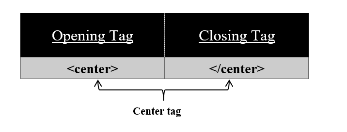

To put content in the center use <center> tag on your HTML page.
Syntax:
<center>
//content
</center>
The <center> tag is used to put your content in the center of your HTML page. You can use this tag in your table also. Sometimes we need our text to be in the center for that this <center> tag is used. This tag has both an opening and a closing tag. It is not an empty tag.